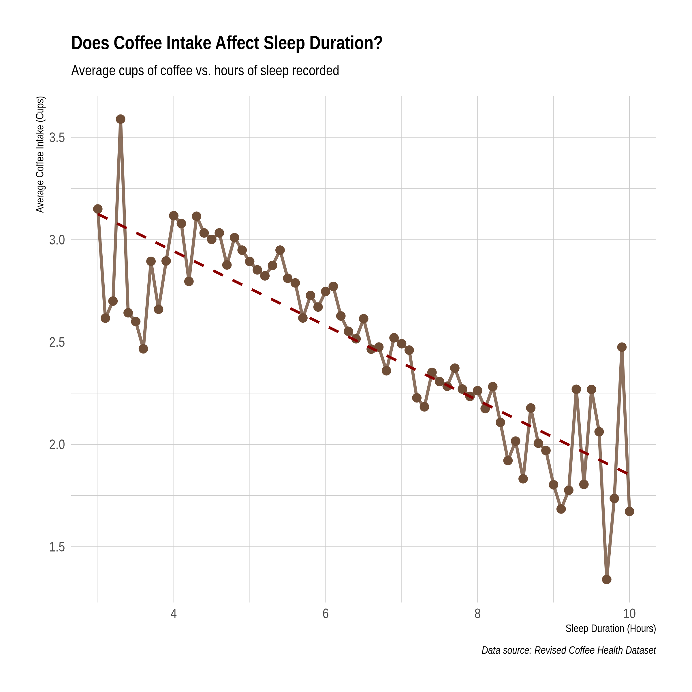
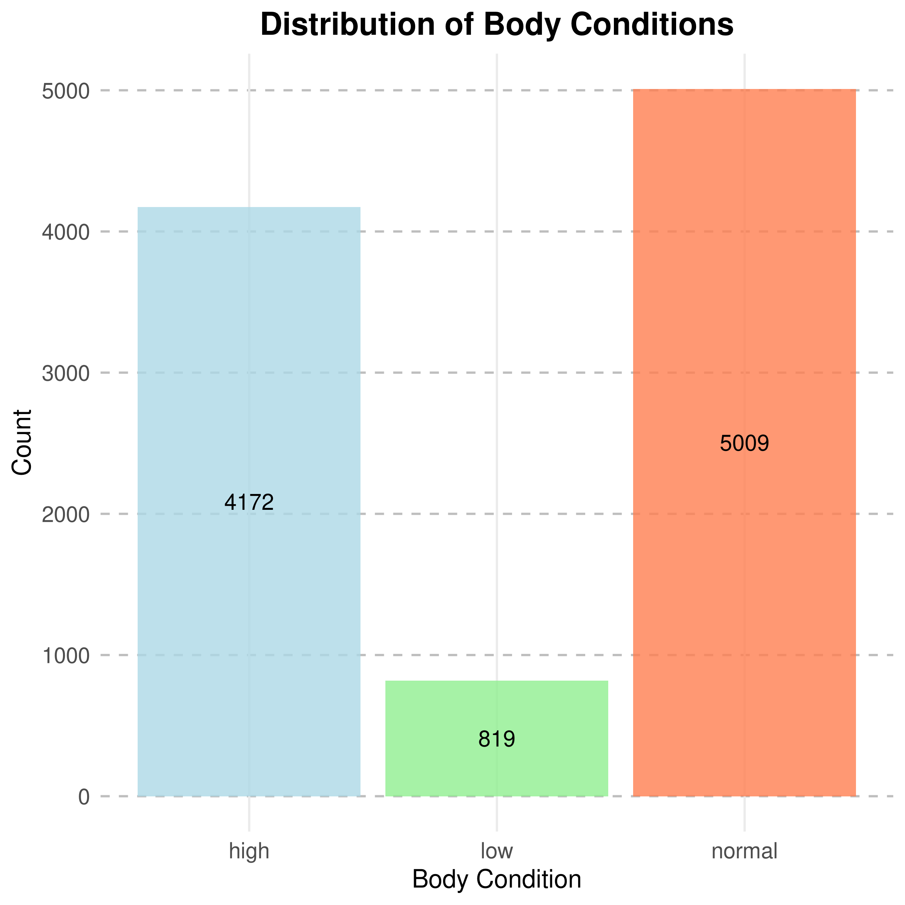
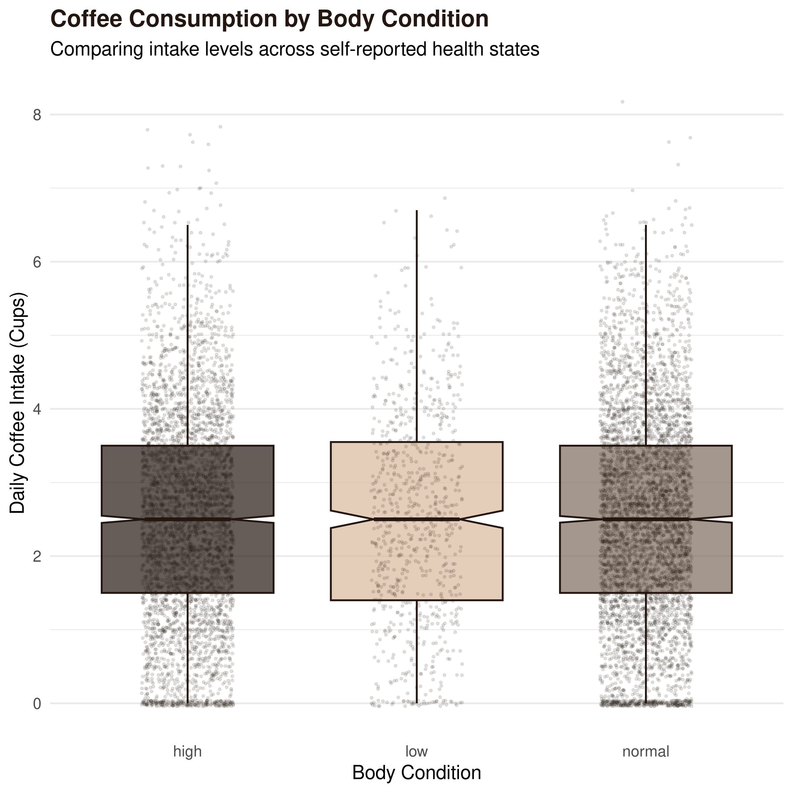
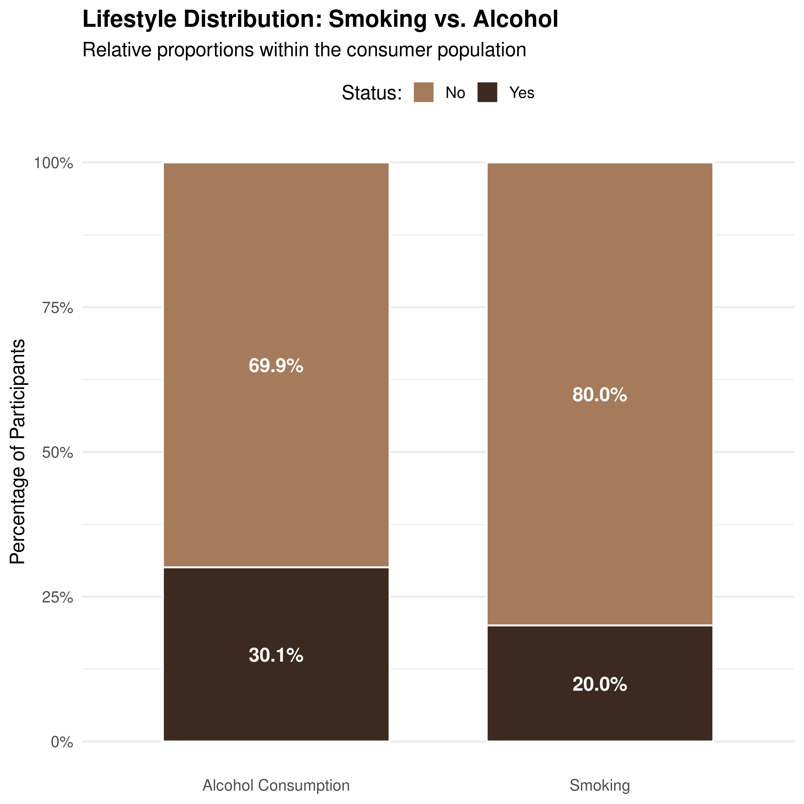
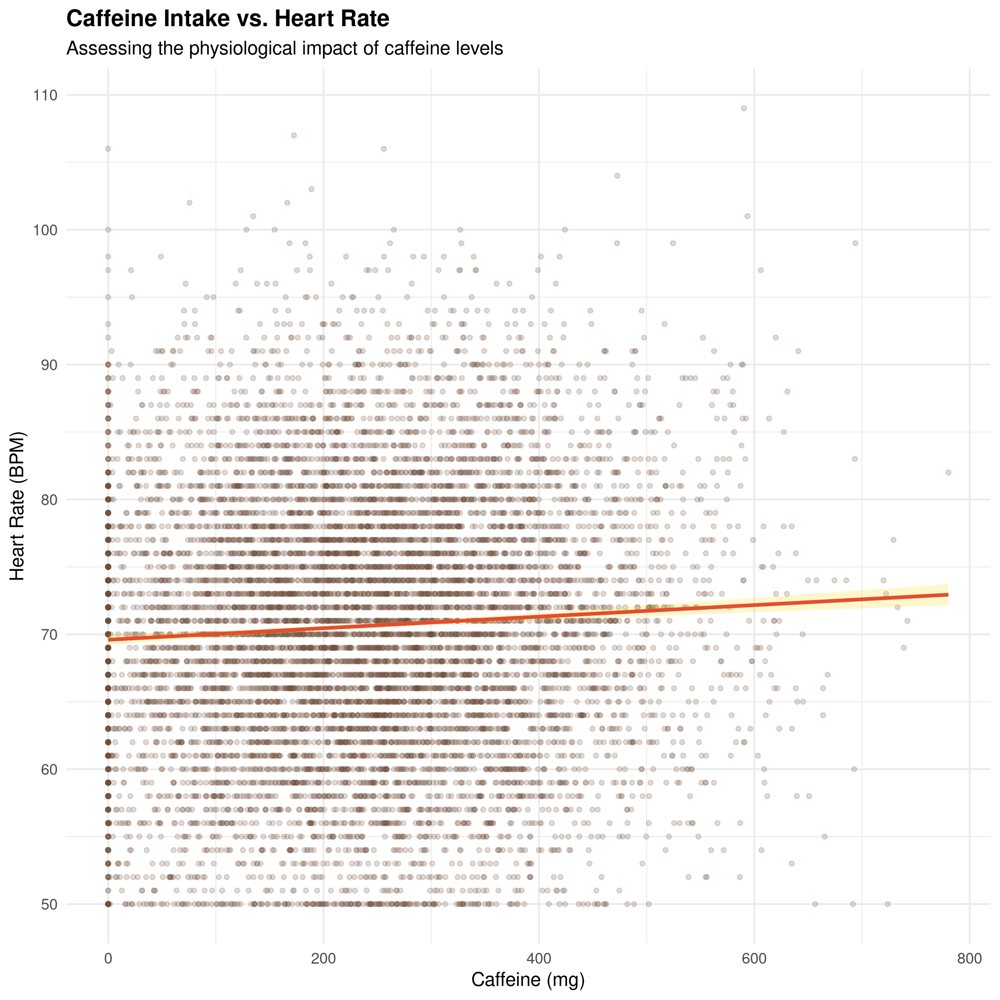
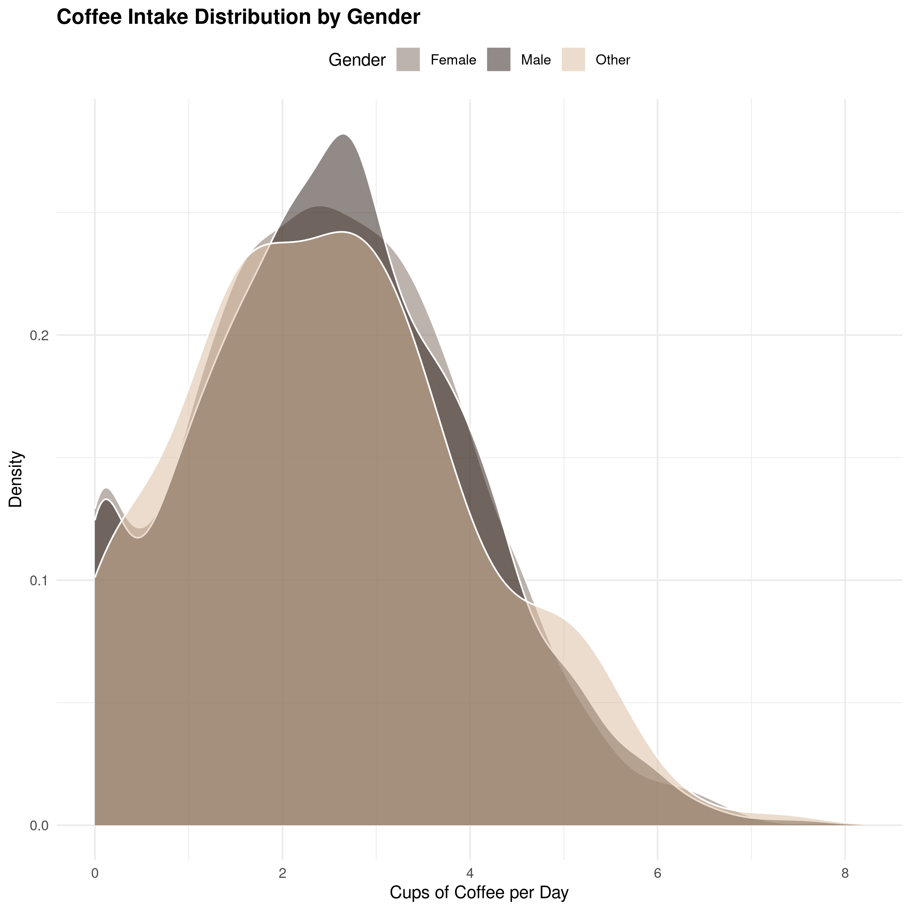

Polyglot Data Science Example
Table of Contents
I thought a Kaggle dataset could be a good example, since I don’t have any background in medicine, I needed some filler. Link to Data Source
1. Relevant Org Header Arguments
#+PROPERTY: header-args:R :session *R-lang* :results output #+PROPERTY: header-args:python :session *py-lang* :results output #+PROPERTY: header-args:bash :results silent
Here, we’re establishing (at the beginning of the org file) things we want to apply implicitly
to the behavior of R, Python, and our Bash while the program runs. In general, bash output is going to vary from machine to machine, so let’s not include that (:results silent). However, we’ve decided that our R output and Python output, we’d like to see (:results output).
Properties can also be defined on a sub-tree level with drawers, which is particularly clean as the tasks grow in complexity:
:PROPERTIES: :header-args: :cache yes :END:
Sometimes, it’s better to define custom behavior per cell block, which is also possible, as we did when verifying the R version.
2. Dowloading the dataset with cURL:
Since we’ll be working with BASH here several times, let’s just define for this entire level that the results should be output to code blocks:
I found this interesting dataset on Kaggle and I though it might be relevant for medicine and as a demo. Their site conveniently gives commands to download it using cURL (again, Linux rules…)
curl -L -o global-coffee-health-dataset.zip\ https://www.kaggle.com/api/v1/datasets/download/uom190346a/global-coffee-health-dataset
How do I…
unzip --help
I’ve learned the hard way, it’s best practice to VERIFY the data integrity before getting started…
unzip -t global-coffee-health-dataset.zip
Archive: global-coffee-health-dataset.zip
testing: synthetic_coffee_health_10000.csv OK
No errors detected in compressed data of global-coffee-health-dataset.zip.
Wonderful, there are no errors in the .zip file as far as unzip is concerned. Now, let’s extract and rename…
unzip global-coffee-health-dataset.zip synthetic_coffee_health_10000.csv
mv synthetic_coffee_health_10000.csv coffee.csv
Archive: global-coffee-health-dataset.zip inflating: synthetic_coffee_health_10000.csv
3. Environment Inspection
As is good practice, let’s inspect our environment before beginning, verifying that versions of R, Python, and any other dependencies (i.e. the package containing the dataset) match up with the results of the example project. Org mode has our back:
R --version | head -n 1
There are also some R dependencies that are necessary:
# packages can be installed from a list:
install.packages(c("remotes", "tidyverse", "hrbrthemes", "extrafont"))
# Handy tool for installing R packages (sometimes not on CRAN) directly from GitHub...
remotes::install_git("https://codeberg.org/hrbrmstr/hrbrthemes.git")
It’s also a good idea to make sure Emacs and Org are up to the task, since R isn’t enabled as a Babel lang by default:
(defun check-ess-installed () "Check if ESS is installed." (if (require 'ess nil 'noerror) (message "ESS is installed.") (message "ESS is not installed."))) ;; Call the function (check-ess-installed)
Let’s also check the Python version:
python --version
4. Data Wrangling in R
4.1. Load and Clean
library(tidyverse) read.csv("coffee.csv") -> df df %>% str()
'data.frame': 10000 obs. of 16 variables: $ ID : int 1 2 3 4 5 6 7 8 9 10 ... $ Age : int 40 33 42 53 32 32 53 44 29 41 ... $ Gender : chr "Male" "Male" "Male" "Male" ... $ Country : chr "Germany" "Germany" "Brazil" "Germany" ... $ Coffee_Intake : num 3.5 1 5.3 2.6 3.1 3.4 2.7 4.5 1.7 4 ... $ Caffeine_mg : num 328.1 94.1 503.7 249.2 298 ... $ Sleep_Hours : num 7.5 6.2 5.9 7.3 5.3 6.4 7.8 5.5 7.1 6.4 ... $ Sleep_Quality : chr "Good" "Good" "Fair" "Good" ... $ BMI : num 24.9 20 22.7 24.7 24.1 27 24.3 15.8 21.7 30.4 ... $ Heart_Rate : int 78 67 59 71 76 82 58 62 60 69 ... $ Stress_Level : chr "Low" "Low" "Medium" "Low" ... $ Physical_Activity_Hours: num 14.5 11 11.2 6.6 8.5 8.8 1 0.7 2.2 11.9 ... $ Health_Issues : chr "None" "None" "Mild" "Mild" ... $ Occupation : chr "Other" "Service" "Office" "Other" ... $ Smoking : int 0 0 0 0 0 0 1 1 1 0 ... $ Alcohol_Consumption : int 0 0 0 0 1 0 0 1 1 0 ...
This looks like a dataset that we could use to predict Health_Issues based on: Age, Gender, Coffee_Intake, Caffeine_mg, Sleep_Hours, BMI, Heart_Rate, Stress_Level, Physical_Activity_Hours, Occupation, Smoking.
A few of these things seem like stuff that shouldn’t matter (playing doctor here, but go with it…) i.e. Country, Sleep_Quality (too subjective). So, let’s drop those as part of the data cleaning.
df %>% select(!c(Country, Sleep_Quality)) -> df
It’s also good to convert Smoking and AlcoholConsumption to factors rather than boolean (actually integers):
We could’ve used tryLogical on read.csv if they’d have used F/T or FALSE, TRUE instead… Plea to anyone creating dataframes…
df <- df %>% mutate( Smoking = as.logical(Smoking), Alcohol_Consumption = as.logical(Alcohol_Consumption) )
4.2. Basic analysis:
Honestly, I take advantage of split-screen mode and a REPL for this step, then I put code in src blocks later down below.
4.2.1. Coffee Intake vs SleepHours
First, the graphics need a place to live:
mkdir output
It looks like there’s definitely some correlation here between how much coffee one drinks and how much sleep they get. “Interesting…”
library(hrbrthemes) # For a clean typography-focused theme df %>% group_by(Sleep_Hours) %>% summarise(mean_coffee = mean(Coffee_Intake)) %>% ggplot(aes(x = Sleep_Hours, y = mean_coffee)) + # Use points and lines together for better readability geom_line(color = "#6F4E37", size = 1.2, alpha = 0.8) + geom_point(color = "#6F4E37", size = 3) + # Add a smoothing line to see the overall trend geom_smooth(method = "lm", color = "darkred", linetype = "dashed", se = FALSE) + # Polish the labels and theme labs( title = "Does Coffee Intake Affect Sleep Duration?", subtitle = "Average cups of coffee vs. hours of sleep recorded", x = "Sleep Duration (Hours)", y = "Average Coffee Intake (Cups)", caption = "Data source: Revised Coffee Health Dataset" ) + ## theme_ipsum() + # Or theme_minimal() if you don't have hrbrthemes theme_ipsum() + theme( plot.title = element_text(face = "bold", size = 16), axis.title = element_text(size = 12) )

We definitely should save that, but let’s mark that todo later. C-c C-t t
4.2.2. BMI Range
18.5 -> 24.9 is considered healthy.
ggplot(df, aes(y = BMI, x = "")) + geom_boxplot(fill = "#6F4E37", color = "#3C2A21", alpha = 0.7, notch = TRUE) + geom_jitter(color = "black", size = 0.5, alpha = 0.2, width = 0.1) + labs( title = "Distribution of BMI", subtitle = "Analysis of 10,000 coffee consumers", y = "Body Mass Index (BMI)", x = NULL ) + theme_minimal() + theme(plot.title = element_text(face = "bold"))
The boxplot shows there are outliers. How many?
Q1 <- quantile(df$BMI, .25) Q3 <- quantile(df$BMI, .75) overwt <- 24.9 underwt <- 18.5 # Number of overweight outliers of 10k sample size nrow(df[df$BMI > overwt,])/10000 # Number of underweight outliers of 10k sample size nrow(df[df$BMI < underwt,])/10000
[1] 0.4064 [1] 0.0819
Actually, this could be a handy factor to add to the data, i.e. body_condition low, ok, high.
df %>% mutate(Body_Condition = factor(case_when( BMI < underwt ~"low", BMI >= underwt & BMI < overwt ~ "normal", BMI >= overwt ~ "high" ))) -> df summary(df$Body_Condition)
high low normal 4172 819 5009
Interesting. Very nearly as many high-weight subjects as normal, very few low… There should probably be a table of that for the final report.
ggplot(df, aes(x = Body_Condition)) + geom_bar(fill = c("lightblue", "lightgreen", "coral"), alpha = 0.8) + # Custom colors for bars labs(title = "Distribution of Body Conditions", x = "Body Condition", y = "Count") + theme_minimal(base_size = 15) + # Base font size for readability theme(plot.title = element_text(hjust = 0.5, size = 20, face = "bold"), # Centered title plot.subtitle = element_text(hjust = 0.5, size = 14, face = "italic"), axis.title.x = element_text(size = 16), axis.title.y = element_text(size = 16), axis.text.x = element_text(size = 14), axis.text.y = element_text(size = 14), panel.grid.major.y = element_line(color = "grey", linetype = "dashed"), # Customize grid lines panel.grid.minor = element_blank()) + geom_text(stat = 'count', aes(label = ..count..), position = position_stack(vjust = 0.5), size = 5, color = "black") # Add count labels

Graphs also show that bodycondition doesn’t change the amount of coffee taken in. Somewhat interesting because I’d think like other substances, heavier and lighter people need more/less. This is synthetic data, maybe we can cast doubt on it with this result?
# Espresso, Cool Taupe, Oat Milk coffee_colors <- c("low" = "#D9B99B", "normal" = "#7D6B5D", "high" = "#241611") ggplot(df, aes(x = Body_Condition, y = Coffee_Intake, fill = Body_Condition)) + # Adds a "notched" boxplot to show confidence intervals of the median geom_boxplot(notch = TRUE, alpha = 0.7, color = "#241611", outlier.shape = NA) + # Adds jittered points to show the actual distribution of 10k rows geom_jitter(width = 0.2, alpha = 0.1, size = 0.5, color = "#241611") + scale_fill_manual(values = coffee_colors) + labs( title = "Coffee Consumption by Body Condition", subtitle = "Comparing intake levels across self-reported health states", x = "Body Condition", y = "Daily Coffee Intake (Cups)" ) + theme_minimal(base_size = 14) + theme( legend.position = "none", plot.title = element_text(face = "bold", color = "#241611"), panel.grid.major.x = element_blank() )

4.2.3. Considering other substances
For both smoking and alcohol, there are fewer who do than don’t. Good to know, because that’d throw off our charts/analysis.
prop.table(table(df$Smoking)) prop.table(table(df$Alcohol_Consumption))
library(tidyverse) library(scales) df %>% # Select and clean up data select(Smoking, Alcohol_Consumption) %>% pivot_longer(everything(), names_to = "Metric", values_to = "Status") %>% mutate( Metric = gsub("_", " ", Metric), Status = if_else(Status == TRUE, "Yes", "No") ) %>% # Calculate percentages for labels count(Metric, Status) %>% group_by(Metric) %>% mutate(pct = n / sum(n)) %>% # Plot ggplot(aes(x = Metric, y = pct, fill = Status)) + geom_col(position = "fill", width = 0.7, color = "white", size = 0.5) + # Add direct labels inside the bars geom_text(aes(label = percent(pct, accuracy = 0.1)), position = position_stack(vjust = 0.5), color = "white", fontface = "bold") + scale_y_continuous(labels = percent) + scale_fill_manual(values = c("No" = "#A67B5B", "Yes" = "#3C2A21")) + labs( title = "Lifestyle Distribution: Smoking vs. Alcohol", subtitle = "Relative proportions within the consumer population", x = NULL, y = "Percentage of Participants", fill = "Status:" ) + theme_minimal(base_size = 14) + theme( panel.grid.major.x = element_blank(), legend.position = "top", plot.title = element_text(face = "bold") )

library(ggplot2) ggplot(df, aes(x = Caffeine_mg, y = Heart_Rate)) + # Add points with transparency to handle 10k rows geom_point(alpha = 0.2, color = "#6F4E37", size = 1) + # Add a trend line geom_smooth(method = "lm", color = "#E44D2E", fill = "#FFD700", alpha = 0.2) + labs( title = "Caffeine Intake vs. Heart Rate", subtitle = "Assessing the physiological impact of caffeine levels", x = "Caffeine (mg)", y = "Heart Rate (BPM)" ) + theme_minimal() + theme(plot.title = element_text(face = "bold"))

I think it’s interesting there’s no correlation here, because my experience is that caffeine causes an increase in heart rate.
4.2.4. Coffee Gender Gap?
Looks like gals like Coffee just as much as men.
library(ggplot2) ggplot(df, aes(x = Coffee_Intake, fill = Gender)) + geom_density(alpha = 0.5, color = "white") + scale_fill_manual(values = c("Male" = "#241611", "Female" = "#7D685D", "Other" = "#D9B99B")) + labs( title = "Coffee Intake Distribution by Gender", x = "Cups of Coffee per Day", y = "Density", fill = "Gender" ) + theme_minimal() + theme(legend.position = "top", plot.title = element_text(face = "bold"))

4.3. Export an improved Dataset
Now that we’ve done basic EDA, we can export this (hopefully) improved CSV and move on over to Python to do some more dynamic stuff in a larger ecosystem.
write.csv(df, file = "coffee_revised.csv")
Verify…
head -n 3 coffee_revised.csv
Look what got done with just a little bit of work in R:
- Removed some irrelevant rows
- Did some basic analysis, got some graphs
- Fixed the binary 0/1 classes into more friendly TRUE/FALSE categorical variables
- Added a new categorical row to simplify things
5. Python Visualization
5.1. Handling Virtual Environments
A quick note on Python and virtual environments:
For this example, I installed python.pandas using apt at the os-level, but supposedly it’s very doable to point Babel/Org at a virtualenv version of Python (which is very commonly used, particularly in Git workflows):
Either specify it file-wide... #+PROPERTY: header-args:python :python "/path/to/your/venv/bin/python" Or for a particular header in a particular src block. #+begin_src python :python "/path/to/your/venv/bin/python" :results output #+end_src
On that note, I highly recommend checking out uv, which is incredible for working with Python venvs!
uv init uv add plotly uv add pandas
5.2. Dynamic Plotting with Plotly
Like shown in the above notes, I’m now pointing Python at the virtualenv where I installed plotly and pandas.
import plotly.express as px import pandas as pd # load df: df = pd.read_csv("coffee_revised.csv") fig = px.scatter(df, x="Coffee_Intake", y="Sleep_Hours", size="BMI", color="Health_Issues", hover_data=["Age", "Smoking"], title="Interactive Analysis: Caffeine vs Hours of Sleep", template="plotly_white") fig.write_html("coffee_analysis.html")
Now, there’s a new HTML doc in the parent directory with this very cool intractive graph… It sure looks to me like sleep is a primary factor determining health issues, with a definite dividing line at around 6hrs of rest.
6. Python Random Forest Model
uv add scikit-learn uv add matplotlib
import pandas as pd from sklearn.ensemble import RandomForestClassifier from sklearn.model_selection import train_test_split from sklearn.preprocessing import LabelEncoder df = pd.read_csv("coffee_revised.csv") # 0. Drop rows with missing target values first df = df.dropna(subset=['Health_Issues']) # 1. Prep data: Convert strings to numbers le = LabelEncoder() df['Gender'] = le.fit_transform(df['Gender']) df['Occupation'] = le.fit_transform(df['Occupation']) df['Body_Condition'] = le.fit_transform(df['Body_Condition']) # 2. Define Features (X) and Target (y) X = df[['Age', 'Coffee_Intake', 'Caffeine_mg', 'Sleep_Hours', 'BMI', 'Heart_Rate']] X = X.fillna(X.median()) y = df['Health_Issues'] # 3. Split and Train X_train, X_test, y_train, y_test = train_test_split(X, y, test_size=0.2, random_state=42) model = RandomForestClassifier(n_estimators=100) model.fit(X_train, y_train) print(f"Accuracy: {model.score(X_test, y_test):.2f}")
Accuracy: 1.00
🎉 We developed an amazingly accurate model… Or, maybe not.
Let’s get a classification report:
# 1. Get a report on the ?importance? of each feature to the model: from sklearn.metrics import classification_report print(classification_report(y_test, model.predict(X_test)))
precision recall f1-score support
Mild 1.00 1.00 1.00 720
Moderate 0.99 0.97 0.98 88
Severe 1.00 1.00 1.00 4
accuracy 1.00 812
macro avg 0.99 0.99 0.99 812
weighted avg 1.00 1.00 1.00 812
More fishy numbers… It’s perfectly predicting all three cases. F1 harmonic mean score is also perfct…
Under Support, there aren’t enough severe cases to be statistically significant, so how is it predicting 100% of those correctly?
Likely, there’s an if/then correlation between sleeep, BMI, and age that it’s picking up on. NOT coffee.
So, drink on and get some sleep…
# 2. See which feature is "cheating" import pandas as pd import matplotlib.pyplot as plt feat_importances = pd.Series(model.feature_importances_, index=X.columns) feat_importances.nlargest(10).plot(kind='barh') plt.show()
{kind=link}
7. Generating a Report via typesetting
Link: report Link: bibliography
Once again, Babel is useful here, but it’s just a one-liner, so honestly it could’ve been done elsewhere. This is mostly an example to give ideas for other ways to use it. The same can be done with TeX.
typst compile report.typ
It can even be used for viewing PDFs, if you like: Link PDF
Emphasis that this is just an example, not anything I’ve proofread or plan to do anything with.